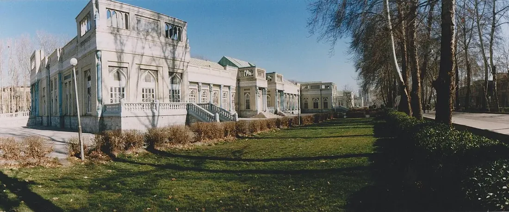

دليل مشهد المقدسة · معلومات للزائر العربي
مستشفيات مشهد: دليل التحقق من التخصصات والخدمات
دليل عملي للتعرف على مستشفيات مشهد والتحقق من توفر التخصصات والإجراءات الطبية قبل السفر للعلاج.

كيف تختار المستشفى المناسب؟
ابدأ بتحديد التخصص والتشخيص، ثم تحقق مباشرة من أن المستشفى يقدم الخدمة المطلوبة حالياً وأن الفريق المعني يستقبل حالتك. اسم المركز وحده لا يثبت أن كل عملية أو تخصص متاح فيه.
- اطلب اسم القسم والطبيب المعالج ومؤهلاته المهنية.
- استفسر عن التقييم الأولي، والوثائق والفحوص المطلوبة، ومدة الانتظار.
- اطلب تقديراً مكتوباً يوضح ما يشمله السعر وما قد يضاف إليه.
- تأكد من ترتيبات الطوارئ والتأهيل والمتابعة بعد العودة إلى بلدك.
مراكز يمكن البدء بالاستفسار منها
تشمل المراكز المعروفة في مشهد مستشفى رضوي، ومستشفى قائم، ومستشفى الإمام رضا، ومستشفى الإمام زمان، إلى جانب مراكز جامعية وتخصصية أخرى. هذه قائمة بداية للبحث وليست ترتيباً للأفضلية، ولا تعني أن جميع الإجراءات متاحة في كل مركز. تحقق من الموقع الرسمي أو اتصل بالمستشفى لتأكيد الخدمة المحددة.
مستشفى رضوي
استفسر عن القسم المطلوب وخدمة المرضى الدوليين إن كانت متاحة.
تحقق من الخدمة مباشرةمستشفى قائم (عج)
تحقق من التخصصات والقبول ومواعيد التقييم.
تحقق من الخدمة مباشرةمستشفى الإمام رضا (ع)
اسأل عن القسم المختص ومتطلبات الإحالة.
تحقق من الخدمة مباشرةمستشفى الإمام زمان (عج)
تحقق من نوع الإجراء والتجهيزات المتاحة حالياً.
تحقق من الخدمة مباشرةصفحات حسب نوع العلاج
إذا كنت تعرف نوع الإجراء، ابدأ بصفحة التخصص ثم اسأل المراكز مباشرة عن توفر الخدمة:
جراحة القلب في مشهد
جراحة القلب المفتوح، أمراض الشرايين، الصمامات، القسطرة والتقييم قبل السفر.
اقرأ الدليل ↙جراحة العظام والمفاصل في مشهد
تعويض مفصل الركبة والورك، إصابات العظام، العمود الفقري وإعادة التأهيل.
اقرأ الدليل ↙علاج العقم وأطفال الأنابيب في مشهد
معلومات تمهيدية عن تقييم الخصوبة، التلقيح المساعد وخيارات العلاج.
اقرأ الدليل ↙علاج السرطان في مشهد
التقييم التخصصي، الجراحة، العلاج الدوائي والإشعاعي بحسب نوع المرض.
اقرأ الدليل ↙جراحة المخ والأعصاب والعمود الفقري في مشهد
دليل استفسار حول حالات الدماغ والأعصاب والعمود الفقري وخيارات العلاج.
اقرأ الدليل ↙علاج وجراحة العيون في مشهد
فحوص العيون، الساد، القرنية والشبكية وتصحيح الإبصار وفق التقييم الطبي.
اقرأ الدليل ↙علاج الأسنان وزراعة الأسنان في مشهد
علاج الأسنان، الجذور، التركيبات، زراعة الأسنان وصحة الفم.
اقرأ الدليل ↙علاج أمراض الكلى والمسالك البولية في مشهد
تقييم حصى الكلى، البروستاتا والمسالك البولية وخيارات العلاج المناسبة.
اقرأ الدليل ↙علاج أمراض الجهاز الهضمي والكبد في مشهد
استشارات الجهاز الهضمي والكبد، التنظير والتقييم قبل الإجراءات.
اقرأ الدليل ↙الجراحة التجميلية والترميمية في مشهد
معلومات قبل الاستفسار عن الإجراءات التجميلية والترميمية والمخاطر والتعافي.
اقرأ الدليل ↙